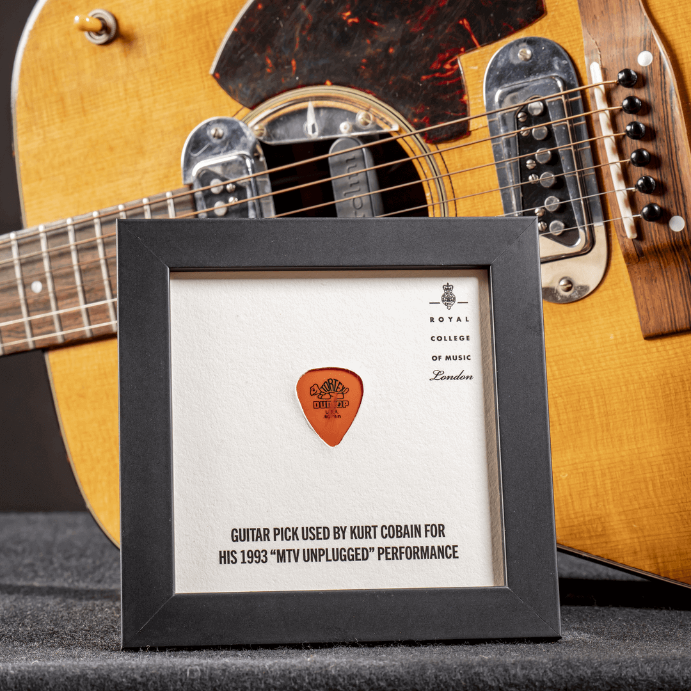
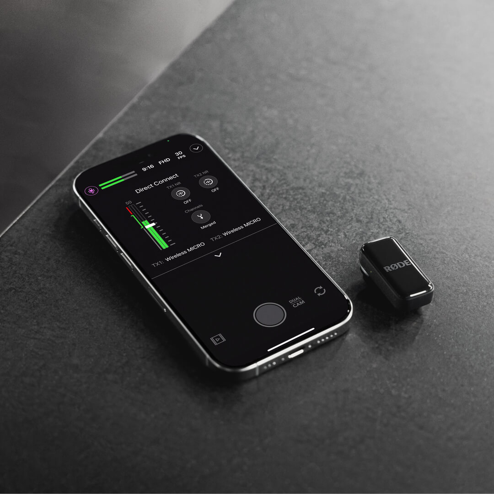
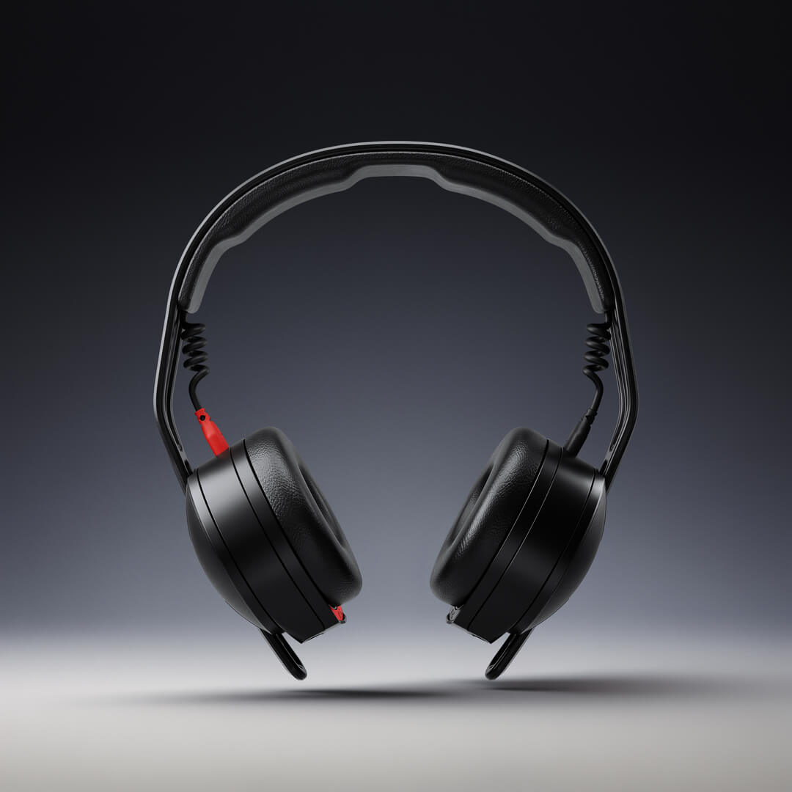
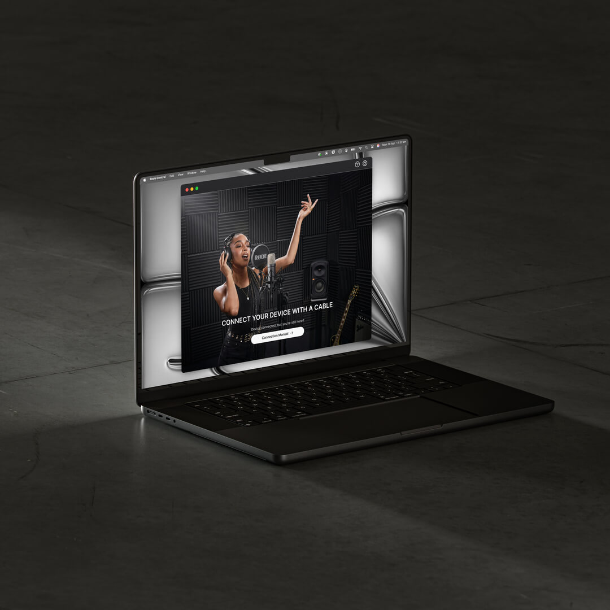

Driven By Sound
Extraordinary sonic performance combines with premium comfort, designed for professionals who demand exceptional sound from their headphones.
Amazing Audio Anywhere
The ultimate pocket-sized companion for smartphone creators on the go, the Wireless Micro is our smallest, simplest and sleekest wireless mic yet.
Video Production, Evolved
A revolutionary all-in-one video and audio production console that combines powerful video switching, recording and production capabilities with a fully integrated professional audio mixer.
Your Sound, Your Style, Your Story
The third generation of the world’s most popular wireless microphone has arrived.

Gear Up and Start Creating
Ranging from compact street interview kits to complete studio setups, there's a RØDE kit for every stage of your creative journey.
Introducing the PodMic USB in White
The PodMic USB is an ultra-versatile dynamic microphone with both an XLR and USB output, ideal for podcasting, streaming, gaming, and other speech applications for content creation. Now available in white.
Your New Go-to Studio Mic
The NT1 Signature Series is a workhorse studio condenser microphone with a warm, silky character, exceptionally low noise and high SPL handling – ideal in a wide range of studio applications.
RØDE Founder Shares Kurt Kobain’s Iconic Guitar with the World
RØDE Founder Peter Freedman AM has loaned Kurt Cobain’s iconic MTV Unplugged guitar to the Royal College of Music Museum in London.
Introducing Direct Connect for Wireless Micro: No Receiver Necessary
Pair your Wireless Micro transmitters directly to your iOS device via Bluetooth® using the RØDE Capture app’s new Direct Connect feature.
Introducing the NTH-50 Professional On-Ear Headphones
The NTH-50 headphones deliver pro-level audio precision, superior comfort, and excellent noise isolation in a lightweight, durable on-ear design.
Introducing the New RØDE Central App: Redesigned for a Better Experience
The RØDE Central app has been completely redesigned across desktop and mobile to be sleeker, smarter and faster.